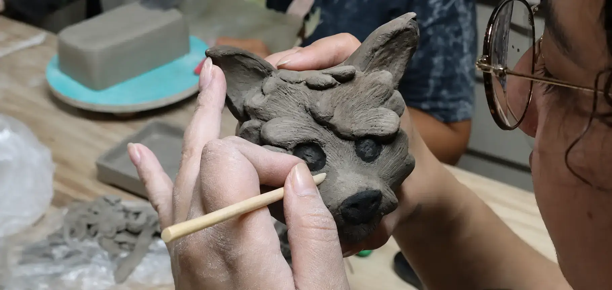
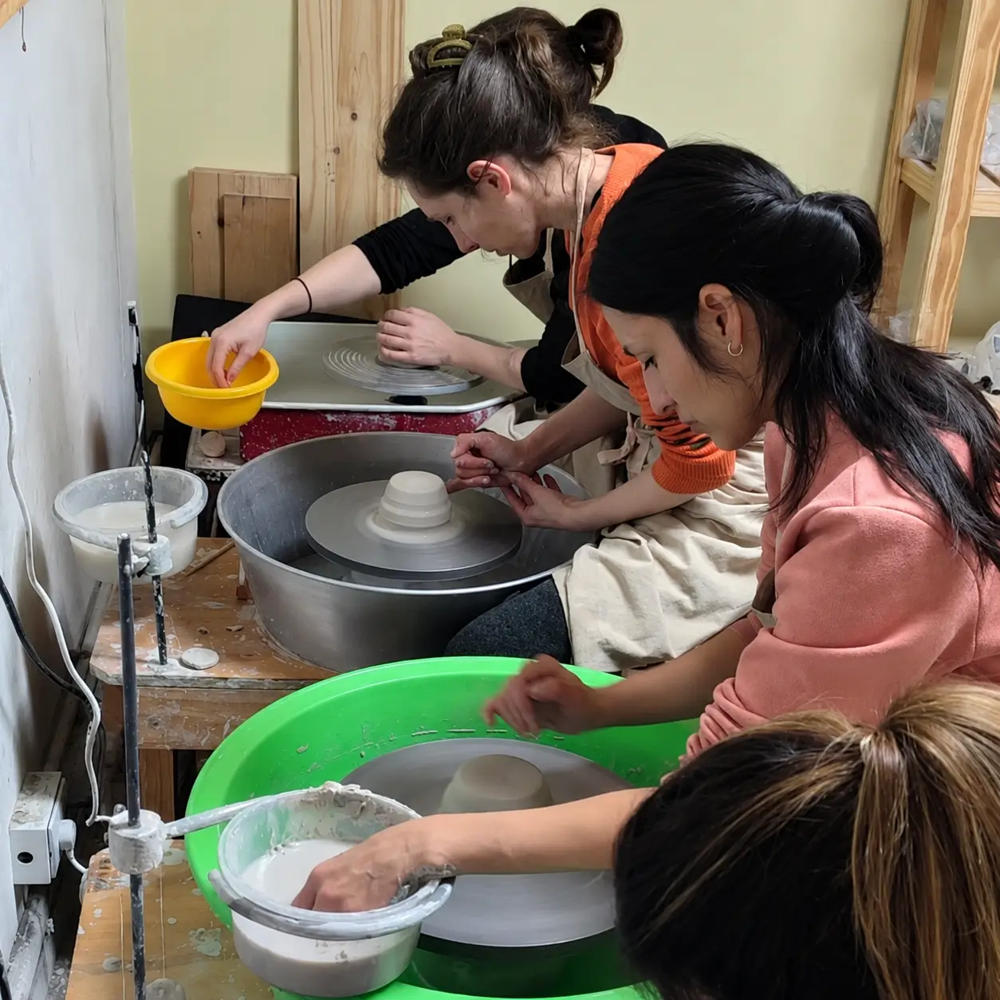
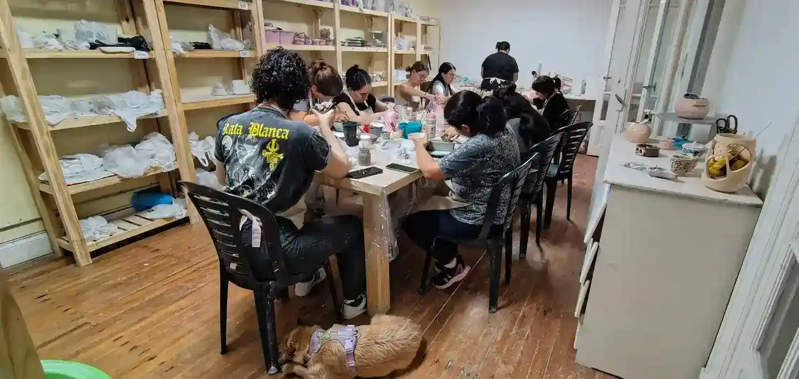
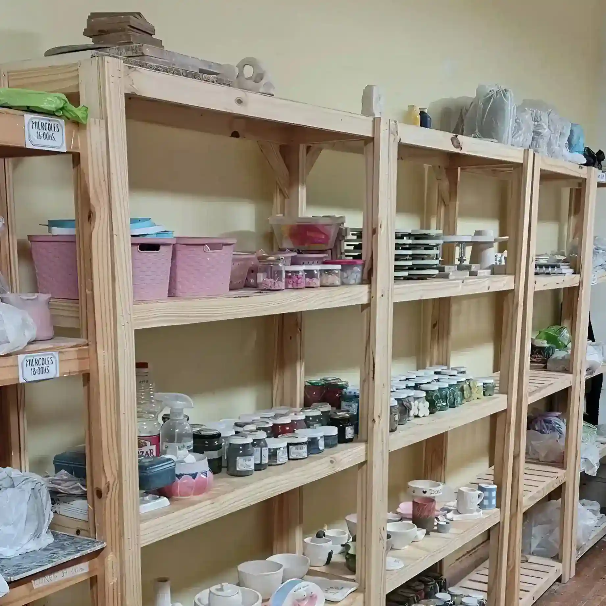
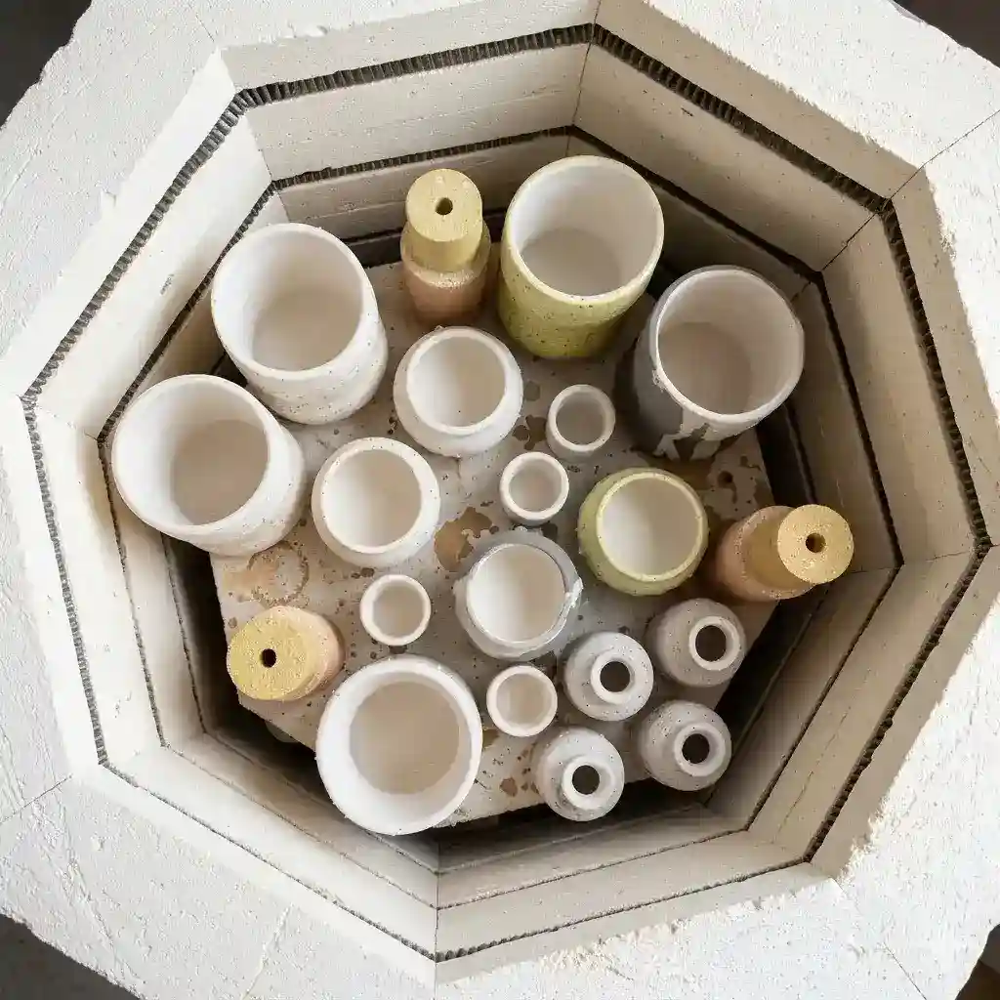
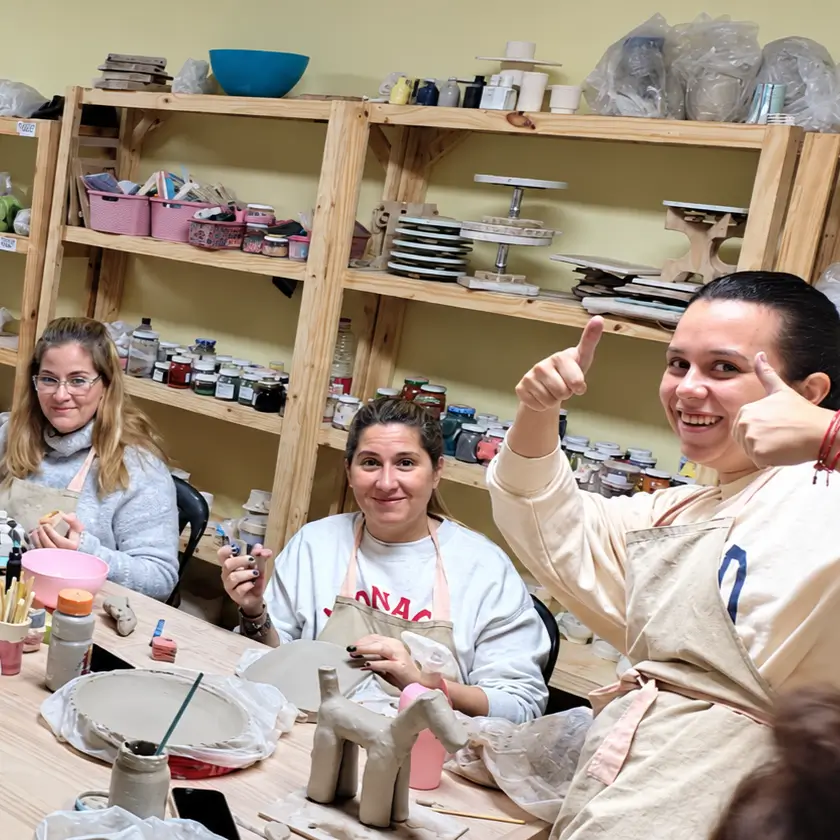
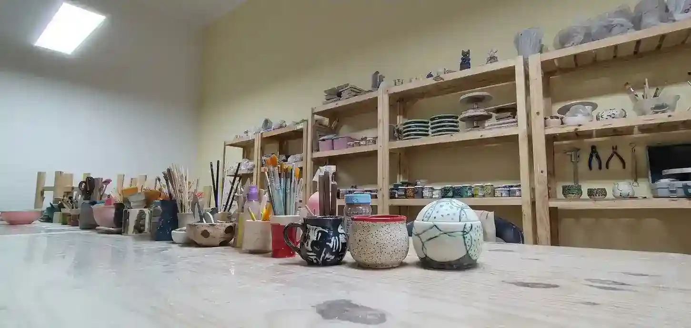
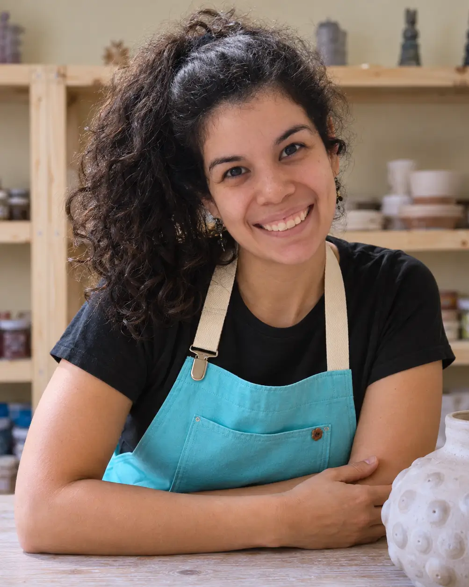

Modelado a mano
Trabajás el barro con las manos, sobre la mesa. Una muy buena puerta de entrada si es tu primera vez.
$82.000 por mesVer modelado a manoProbá con:
Clases de modelado y alfarería
Bajá el ritmo y llevate a casa algo que hiciste vos. Grupos reducidos, todo incluido y sin experiencia previa.
El taller
Estamos en Otamendi 79, Caballito, a dos cuadras del Subte A. Grupos reducidos: siempre hay alguien a tu lado, aunque sea tu primera vez con el barro.
Elegís modelado a mano o alfarería, y no necesitás comprar nada: la pasta, las herramientas, los esmaltes y las horneadas ya están incluidos.
Ver todas las clases




Servicios
Podés empezar con una clase de prueba, anotarte a un plan mensual de modelado o de alfarería, regalar una clase, o usar nuestro horno si ya hacés tus propias piezas.
Trabajás el barro con las manos, sobre la mesa. Una muy buena puerta de entrada si es tu primera vez.
$82.000 por mesVer modelado a manoAprendés a centrar la pasta, abrir la pieza y levantar las paredes en un torno profesional. Tenemos 4 tornos en el taller.
$93.500 por mesVer alfarería
¿Querés saber si te gusta antes de anotarte? Son dos horas, sin experiencia y con todo incluido. Si después seguís, lo que pagaste se descuenta del plan.
Modelado $28.000Alfarería $40.000Ver la clase de pruebaUn regalo para vivirlo, no para guardarlo en un cajón: una clase de prueba o un mes de plan. Lo coordinamos por WhatsApp.
Modelado o alfareríaVer cómo regalarSi ya hacés tus piezas, podés hornearlas con nosotras: horno de 70 litros para bizcocho y esmaltado de loza.
Consultá por tamaño y cantidadVer horneado
¿Tenés una pieza en la cabeza? Contanos qué necesitás y te pasamos una cotización por WhatsApp. El precio depende del tamaño y la complejidad.
Cotización por WhatsAppPedir una piezaElegir tu clase
Si es tu primera vez con el barro, el modelado es una buena puerta de entrada. Si la alfarería te tienta, podés ir directo: tampoco hace falta experiencia. En los dos casos el material va incluido.
| Característica | Plan Modelado | Plan Alfarería |
|---|---|---|
| Técnica | Modelado manual en mesa | Alfarería en torno profesional |
| Precio | $82.000 por mes | $93.500 por mes |
| Qué trabajás | Piezas hechas a mano, hasta el esmaltado final | Centrado, apertura y levantado de paredes |
| Incluye | Pasta, herramientas, esmaltes y horneadas | Pasta, herramientas, esmaltes y horneadas |
| Turnos | De 2 horas, en grupos reducidos | De 2 horas, en grupos reducidos (hay un turno para quienes ya tienen experiencia) |
Todo incluido
No tenés que comprar nada para empezar.
El barro y todo lo necesario para trabajar en cada clase.
Usás las herramientas del taller.
Hay mucha variedad para elegir, y te enseñamos a esmaltar.
Tus piezas se hornean con nosotras: bizcocho y esmalte están incluidos en todos los planes.
Zonas
Estamos a dos cuadras de la estación Río de Janeiro (Subte A) y a una del Parque Rivadavia. Es una zona muy accesible desde Palermo, Villa Crespo, Boedo, Flores, San Cristóbal y Balvanera, y recibimos gente de cualquier barrio de CABA.

Quién está detrás
Mariana conoció la cerámica de chica y volvió a ella en 2020. Es venezolana, vive en Buenos Aires desde 2019 y, además de ceramista, es arquitecta: se recibió en 2014 en Maracay.
En 2021 empezó a formarse en la Escuela de Cerámica Artística, conocida como «La Bulnes», y en marzo de 2024 dio sus primeras clases. De ese recorrido nació Artesana del Barro.
Como arquitecta interiorista, le da valor a cada objeto: en sus piezas busca transmitir sensibilidad humana y natural a través de las texturas, con el color como protagonista.
Preguntas frecuentes
Estamos en Otamendi 79, en Caballito, límite con Almagro. Si venís en subte, bajás en Río de Janeiro (Línea A) y caminás dos cuadras; el Parque Rivadavia nos queda a una. Es una zona muy accesible desde Palermo, Villa Crespo, Boedo, Flores, San Cristóbal y Balvanera, y recibimos gente de cualquier barrio de CABA. Si querés ver el recorrido, mirá cómo llegar al taller o el mapa de zonas de CABA.
Hay turnos de lunes a sábado: atendemos de lunes a viernes de 9:00 a 20:30 y los sábados hasta las 17:00, y cada turno dura dos horas. En la grilla de horarios ves qué cupos quedan cada día.
El Plan Modelado cuesta $82.000 por mes y el Plan Alfarería, $93.500. En los dos está todo incluido (pasta, herramientas, esmaltes y horneadas), así que no hay gastos extra de materiales. Todos los detalles están en planes y precios.
No hace falta ninguna de las dos cosas. Vienen personas que nunca tocaron el barro y otras que ya tienen experiencia; en grupos reducidos, las profesoras te van guiando paso a paso, y los materiales los ponemos nosotras.
Sí, y es una buena forma de saber si te gusta. La clase de prueba dura dos horas, no necesitás experiencia y está todo incluido: $28.000 el modelado o $40.000 la alfarería. Si después te anotás al plan, se descuenta.
Sí. Podés regalar una clase con una gift card por una clase de prueba (modelado $28.000, alfarería $40.000) o por un mes de plan. Nos escribís por WhatsApp y lo coordinamos.
Sí. Si ya hacés tus propias piezas, podés hornearlas en nuestro horno de 70 litros (bizcocho y esmaltado de loza). El precio depende del tamaño y la cantidad: escribinos por WhatsApp y te lo pasamos.
Elegí el día que mejor te quede, reservá con el 50% de seña. Lo demás lo ponemos nosotras.